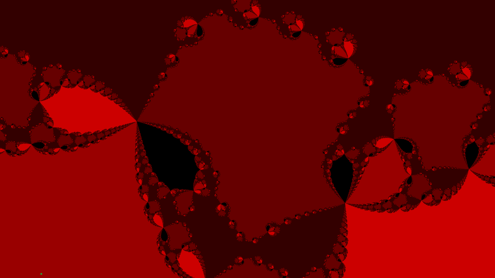
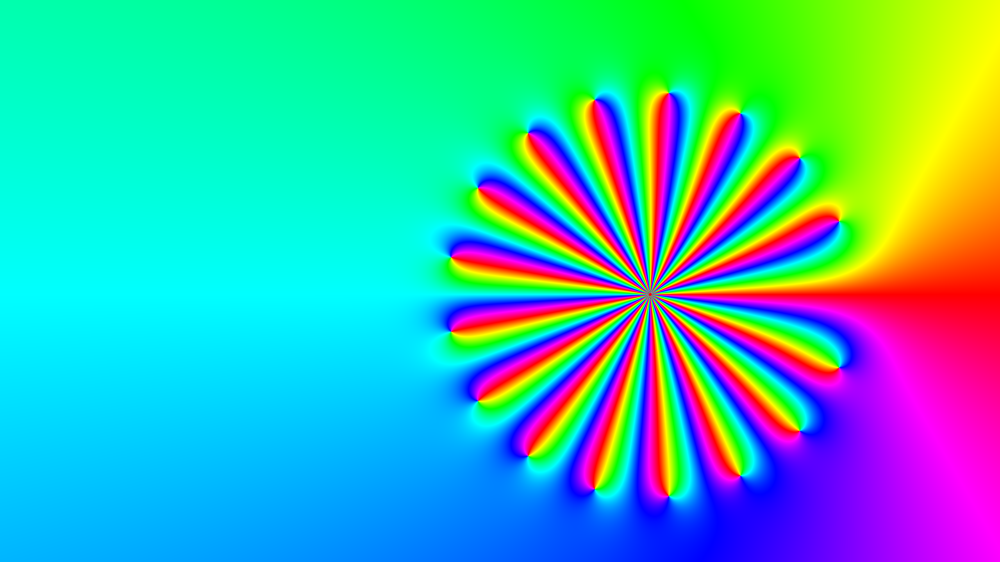

Fractal Renderer
Renders fractals from arbitrary user-defined math expressions in real time

Overview
I often saw fractal visualizers online, but none of them let you easily change the underlying function and watch the fractal change in real time. The classic Mandelbrot set uses z² + C, but I was curious — what does some other function look like? I couldn't find a tool that made experimenting with that easy, so I made one.
What started as a weekend curiosity turned into a deep dive into GPU programming and abstract syntax trees (ASTs). The core challenge: how do you take an arbitrary function a user types in and render it on the GPU fast enough to feel interactive?
How it works
To render fractals in real time, you need the GPU — evaluating the function per-pixel on the CPU is far too slow. But GPUs don't natively support evaluating arbitrary user-defined expressions. You could send the raw function string to the GPU and parse it there, but then you'd be repeating that parsing work for every single pixel — millions of times per frame.
Instead, I parse the user's function on the CPU into an AST — essentially a tree structure that encodes the order of operations. I then walk that tree and convert it directly into GLSL (the language GPUs run). The shader is recompiled with the new function baked in, so the GPU runs native code with no per-pixel parsing overhead. This is the same general technique used to render complex number plots.

Beyond the core expression-to-GLSL pipeline, I implemented several rendering optimizations to keep things interactive, including cycle detection. Rendering arbitrary functions introduces challenges that make some traditional fractal optimization techniques harder to apply — not every function behaves as nicely as z² + C.
Results
The renderer runs at around 120fps for most functions, with real-time feedback as you edit the expression. The AST-to-GLSL approach ended up working really well — it keeps the rendering fast without restricting what the user can type in.
One area I want to continue working on is precision at high zoom levels. GPUs only support single-precision floating point, so once you zoom in far enough, things start to break down. A simpler approach is using hi-lo pairs of floats to get more bits of precision. But there's a more interesting technique called perturbation theory, where you compute high-precision passes for a few reference pixels and interpolate the rest. I don't fully understand it yet and would like to implement it.
Tools & Technologies
GLSL C#